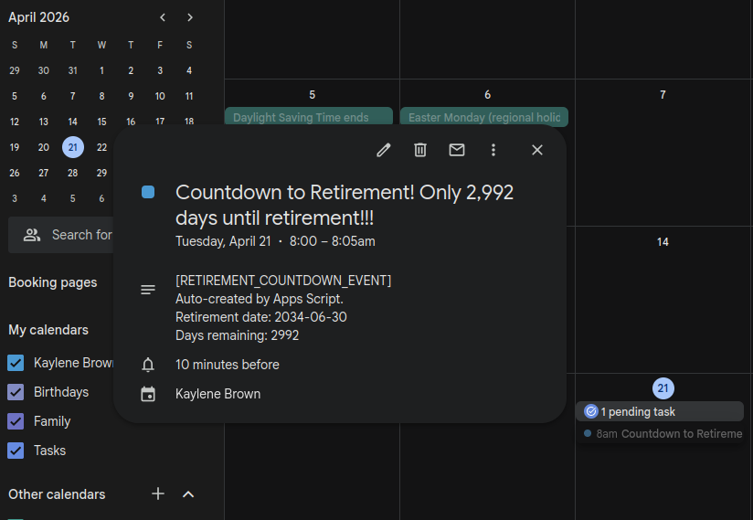

I am a big fan of small automations that quietly improve your day. This week I wrote a tiny Google Apps Script that creates (or updates) a calendar event every morning showing exactly how many days are left until my retirement date.
It is simple, slightly ridiculous, and weirdly motivating. It turns a distant goal into a daily nudge, without me having to think about it.
What it does
- Runs daily and checks today’s date.
- Calculates how many days remain until my retirement date.
- Creates a short 5-minute event at 8:00 AM titled with the countdown.
- If the event already exists for today, it updates it instead of creating duplicates.
- Stops automatically once retirement day has passed.
Why I built it
I like tracking progress and I love the simplicity that automation can bring to my life. A calendar is already the one place I look every day, so putting the countdown there makes it feel effortless. Also: future me deserves a little hype.
How the script avoids duplicates
The key is a tag in the event description:
[RETIREMENT_COUNTDOWN_EVENT]
Each time the script runs, it looks for events between 7:30 AM and 8:30 AM. If it finds an event with that tag, it updates the title/time/description. If not, it creates a new event.
The script
Here is the version I am currently using:
const CALENDAR_ID = 'primary'; // use 'primary' for your main calendar
const RETIREMENT_DATE = new Date('2034-06-30T00:00:00'); // Use UTC time
const EVENT_DURATION_MINUTES = 5;
function createTodayRetirementCountdownEvent() {
try {
const cal = CalendarApp.getCalendarById(CALENDAR_ID);
if (!cal) throw new Error('Could not find calendar with ID ' + CALENDAR_ID)
const now = new Date();
const today = new Date(now.getFullYear(), now.getMonth(), now.getDate());
const retirement = new Date(
RETIREMENT_DATE.getFullYear(),
RETIREMENT_DATE.getMonth(),
RETIREMENT_DATE.getDate()
);
// Stop automatically after retirement day
if (today > retirement) {
Logger.log('Retirement date has already passed.');
return;
}
const msPerDay = 1000 * 60 * 60 * 24;
const daysLeft = Math.ceil((retirement - today) / msPerDay);
const title =
daysLeft === 0
? 'Retirement Day!!!'
: `Countdown to Retirement! Only ${daysLeft.toLocaleString()} days until retirement!!!`;
const start = new Date(today);
start.setHours(8, 0, 0, 0);
const end = new Date(start.getTime() + EVENT_DURATION_MINUTES * 60 * 1000);
const tag = '[RETIREMENT_COUNTDOWN_EVENT]';
// Look for an existing event today in a small window around 8am
const windowStart = new Date(today);
windowStart.setHours(7, 30, 0, 0);
const windowEnd = new Date(today);
windowEnd.setHours(8, 30, 0, 0);
const events = cal.getEvents(windowStart, windowEnd);
let existing = null;
for (const event of events) {
const desc = event.getDescription() || '';
if (desc.includes(tag)) {
existing = event;
break;
}
}
const description =
`${tag}\n` +
`Auto-created by Apps Script.\n` +
`Retirement date: 2034-06-30\n` +
`Days remaining: ${daysLeft}`;
if (existing) {
existing.setTitle(title);
existing.setTime(start, end);
existing.setDescription(description);
} else {
cal.createEvent(title, start, end, {
description: description
});
}
} catch (error) {
Logger.log('Error creating or updating event: ' + error.message);
}
}Make it run automatically
To make this hands-off, add a time-based trigger in Apps Script:
- Open the Apps Script editor.
- Go to Triggers (clock icon).
- Click Add Trigger.
- Choose
createTodayRetirementCountdownEvent. - Select Time-driven and set it to run daily what ever time suits you. I love a good morning reminder.